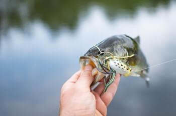

Little Fish Haven, Idaho, is paradise for residents
It's an undiscovered paradise. Most people who drive by recognize the raw beauty of a place ringed by high desert mountains and bordered by the shores of a vast natural lake.
In winter the hills outside this small paradise echo with the sharp whine of snow machines and in the summer thousands of tourists ply the lake's bright blue waters with water skis or fishing poles.
But they don't live there. It's different living in Fish Haven.
The little town sits just on the Idaho side of U.S. Highway 89 tucked in between Bear Lake's west side and the mountains.
It's not technically a city or a town, it's really nothing more than the proverbial wide spot in the road. But people call it a town even though there isn't a city council, just the Bear Lake County Commission that oversees development there.
Only 50 to 100 people call it home, depending on the weather.
Vic Tilt, co-owner of Gladys' Place, is one of the few year-around residents and said the population drops quickly when things get cold.
The winter evacuation isn't much of a worry for Tilt, 60, because his store is the only one around. The nearest other store is in Montpelier, about 45 minutes away.
Gladys' Place is also only a few minutes from the Utah border and has become quite a lottery spot. The little store is the third- and fourth-biggest lottery ticket seller in Idaho, selling about 500,000 tickets a year.